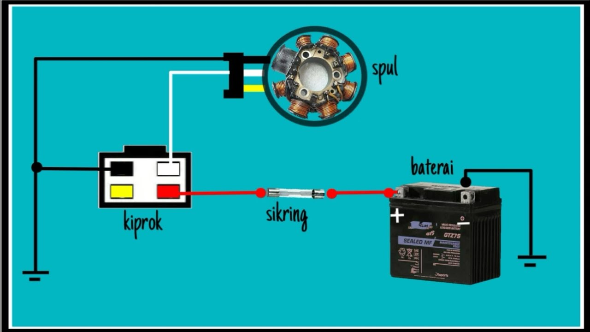

📝 Pretest
Mempelajari fungsi, komponen, prinsip kerja, pemeriksaan baterai dan tegangan pengisian, diagnosis, serta K3.
📖 Materi Sistem Pengisian
1. Pengertian dan fungsi
Mempelajari fungsi, komponen, prinsip kerja, pemeriksaan baterai dan tegangan pengisian, diagnosis, serta K3.
2. Pokok materi
- Alternator menghasilkan AC saat mesin berputar; regulator/rectifier mengolah dan mengatur energi listrik.
- Baterai menyimpan energi dan menyuplai beban sesuai kebutuhan sistem.
- Pemeriksaan mencakup kondisi baterai, tegangan, output pengisian, konektor, dan massa.
3. Alur kerja sederhana
4. Pemeriksaan dan diagnosis
- Identifikasi gejala dan kondisi kendaraan.
- Periksa kondisi fisik, kabel, konektor, sekring, sakelar, dan massa sesuai sistem.
- Gunakan multimeter atau alat khusus sesuai prosedur.
- Bandingkan hasil dengan spesifikasi/manual servis kendaraan.
- Tentukan penyebab dan lakukan perbaikan sesuai prosedur.
- Lakukan pengujian ulang setelah perbaikan.
🎯 Quiz
Uji pemahaman setelah mempelajari materi.
🏆 Evaluasi / Post Test
Kerjakan setelah materi dan quiz selesai.
📋 LKPD Praktik — Sistem Pengisian
A. Identitas
| Nama Siswa | ................................................ |
| Kelas | XI TSM |
| Kelompok | .................... |
| Tanggal | .................... |
B. Tujuan
- Mengidentifikasi komponen sistem pengisian.
- Menjelaskan fungsi setiap komponen.
- Melakukan pemeriksaan dasar sesuai K3.
- Menganalisis hasil pemeriksaan.
C. Langkah Kerja
- Siapkan kendaraan, alat ukur, alat tangan, dan APD.
- Identifikasi komponen sistem.
- Periksa kondisi fisik dan koneksi.
- Lakukan pengukuran/pengujian sesuai instruksi guru dan manual servis.
- Catat hasil pengujian.
- Bandingkan dengan spesifikasi.
- Buat diagnosis dan kesimpulan.
D. Tabel Hasil Pemeriksaan
| No | Komponen/Pemeriksaan | Hasil | Spesifikasi | Kesimpulan |
|---|---|---|---|---|
| 1 | Komponen 1 | |||
| 2 | Komponen 2 | |||
| 3 | Komponen 3 | |||
| 4 | Komponen 4 | |||
| 5 | Kabel/konektor |
E. Analisis
1. Apa hasil pemeriksaan dan apakah sistem bekerja normal?
........................................................................................................
2. Apa kemungkinan penyebab jika hasil tidak sesuai?
........................................................................................................
F. Kesimpulan
........................................................................................................
🎬 Media Pembelajaran
Gunakan media berikut untuk memahami cara kerja Sistem Pengisian Sepeda Motor.
🖼️ Rangkaian Sistem Pengisian
